| プラットフォーム | Webブラウザー | |
|---|---|---|
| パソコン | Windows |
Microsoft Edge Mozilla Firefox Google Chrome |
| macOS | Safari Mozilla Firefox |
|
| スマートフォン・タブレット | iPhone / iPad | 非対応 |
| Android | 非対応 | |
このゲームは、プレイモードとクリエイトモードの2種類で構成されているよ。
ブロックを組み合わせてキャラクターを動かして、全てのはたを取るモードだよ。
ステージを作成することができるよ。
ステージ上のマスをクリックすることで、そのマスにアイテムせんたくボックスからえらんだアイテムを置けるよ。
作成したステージをほぞんしたり共有することもできるよ。
①ステージ1から始めてみよう。ステージが進むにつれてむずかしくなるよ。
ボタンやボックスなどの動作は、部品説明を見てね。
②命令ブロックは、ワークスペースにドラッグ＆ドロップしてならべよう。
いらなくなったブロックは、ゴミ箱かブロックエリアに
ドラッグ＆ドロップすると、ブロックを捨てることができるよ
命令ブロックの動きは、ブロック説明を見てね。
③ブロックを並べたら、実行ボタンをクリックしよう。
ブロックの命令通りにキャラクターが動くよ。
キャラクターが止まった時にしか、はたを取れないから注意してね。
実行中に実行ボタンをクリックすると、キャラクターが一時ていしするよ。
④ステージ上の「はた」を全て取ると、「クリア！つぎのもんだいのちょうせん！」と表示され、ステージクリアとなるよ。
つぎのもんだいにどんどんちょうせんしてみよう！
ステージ上の「はた」を全て取れなかったり、キャラクターが一度でも黒いマスに入ってしまった場合、
「しっぱい……もういちどちょうせん！」と表示され、ステージクリアしっぱいだよ。
実行ボタン |
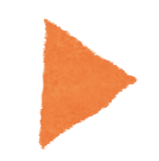 | キャラクターがブロックの命令通りに動くよ。 |
ステージせんたくボックス |
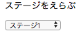 |
もともとあるステージやほぞんしたステージ、 ダウンロードしたステージをえらぶところだよ。 |
スピードチェンジボックス |
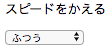 | キャラクターの実行スピードを変えることができるよ。 |
ステージさくじょボックス |
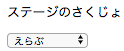 |
ほぞんしたステージやダウンロードしたステージだけが表示されて、 ステージをえらぶと消すことができるよ。 |
モードチェンジボタン |
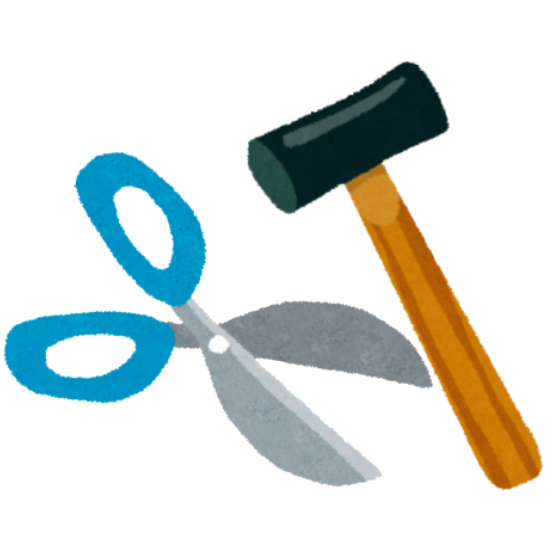 | プレイモードとクリエイトモードを変えるボタンだよ。 |
ほぞんボタン |
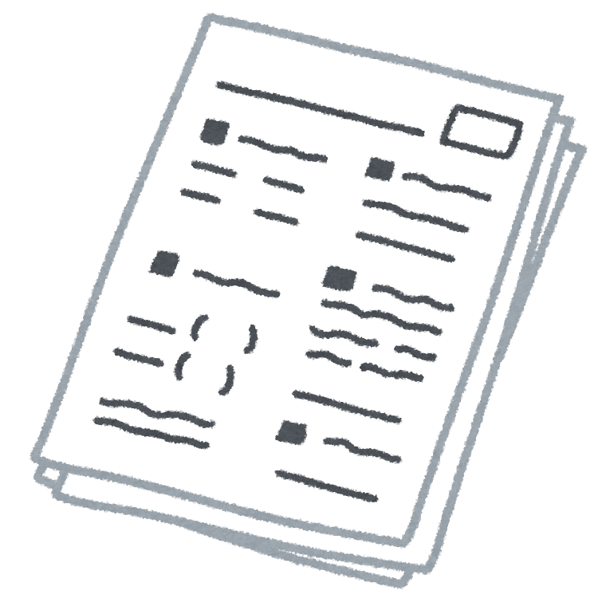 |
今表示しているステージをほぞんできるよ。 ステージはステージせんたくボックスの一番後ろについかされるよ。 |
アイテムせんたくボタン |
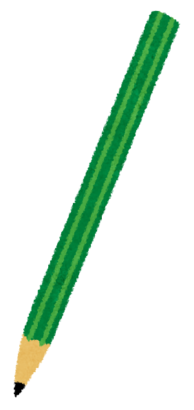 |
ステージに置けるアイテムが表示されるボタンだよ。 アイテムをえらぶとマウスポインターがえらんだアイテムに変わるよ。 |
ブロック数入力フィールド |
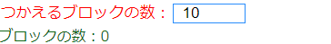 | 使えるブロックの数をキーボードで入力する場所だよ。 |
ダウンロードボタン |
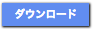 |
共有されたステージをダウンロードできるよ。 えらんだステージはステージせんたくボックスの一番後ろについかされるよ。 |
アップロードボタン |
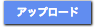 |
今表示しているステージに名前をつけてステージを公開できるよ。 ステージをアップロードするためには、ステージにはたを必ず置く、 作ったステージをクリアする、使えるブロックの数を入力する、が条件だよ。 |
アップロードしたステージを
|
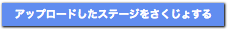 |
アップロードした自分のステージが全て表示されて ステージをえらぶと、ステージを消すことができるよ。 |
キャラクターチェンジボタン |
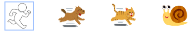 | 使うキャラクターのボタンをおすと、えらんだキャラクターに変わるよ。 |
メインブロック |
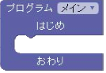 |
メインブロックの中に組み込まれている命令ブロックが上からじゅんばんに実行されるよ。 メインブロックに組み込まれていないブロックは実行されないよ。 |
前に進むブロック |
げんざいの進行方向に対して⬜︎マス前に進むよ。 数字をクリックすることで1、2、3、4、8の数字の中からえらんだ数字のマス分前に進むよ。 |
|
右を向くブロック |
げんざいの進行方向に対して右に向くよ。 | |
後ろを向くブロック |
げんざいの進行方向に対して後ろを向くよ。 | |
左を向くブロック |
げんざいの進行方向に対して左を向くよ。 | |
プログラム⬜︎を呼ぶブロック |
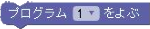 |
プログラム⬜︎ブロックで設定したブロックを呼ぶよ。 ⬜︎には数字を設定し、設定した数字のプログラムを呼び出すよ。 |
if（イフ）ブロック |
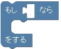 |
if(イフ)とは、「もし」という意味で、指定した方向のマスを調べて、 前に「はた」や「「あな」がある場合にifブロックの中に組み込まれた命令ブロックの動作をするよ。 |
if else（イフ エルス）ブロック |
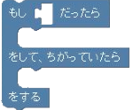 |
else(エルス)とは、「そうでなければ」という意味で、指定した方向のマスを調べて、 前に「はた」や「あな」がない場合にelseブロックの中に組み込まれた命令ブロックの動作をするよ。 |
条件式（じょうけんしき）ブロック |
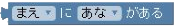 |
ifブロック、if elseブロックの条件式部分に入れるブロックだよ。 指定した方向に「ゆか」、「あな」、「はた」があるかどうかを判定するよ。 |
loop（ループ）ブロック |
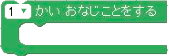 |
loopブロックの中に組み込まれた命令ブロックを⬜︎回くりかえすよ。 数字をクリックすることで1、2、3、4、8の数字の中から選んだ数字の回数くりかえすよ。 |